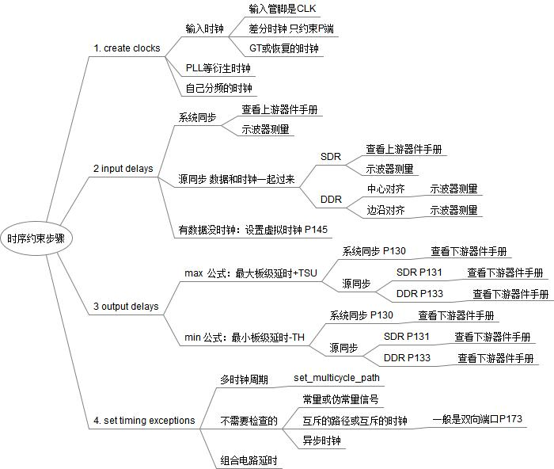

时序约束¶
按前面的顺序去索引，找到对应情况，按要求约束
开始时至配置时钟，不配置 input delays、output delays和时序例外
待内容时钟完全通过后，再配置input delays、output delays
时序例外是最后差不多要完工了再配置
create clocks¶
建立/保持时间是D触发器的一个固有属性
在时钟跳变沿到来前、后的一段时间内输入数据要稳定不变，“前”称之为建立时间，“后”称之为保持时间
D触发器的数据输入端必须在建立时间前到达，而且要保持到持续时间之后
Tmin = Tco+Tdata+Tus 寄存器传输延时、组合逻辑延时、建立时间
建立/保持时间 |
建立时间是电路延时的一部分 |
电路的延时 |
寄存器间最长的延时 |
关键路径 |
决定最高的时钟频率 |
时钟频率 |
提高一个电路工作频率的方法 |
流水线设计 |
时钟定义的先后顺序
时钟的定义也遵从 XDC/Tcl 的一般优先级
同一个点上，用户定义的时钟会覆盖工具自动推导的时钟
后定义的时钟会覆盖先定义的时钟
若要二者并存，必须使用 –add 选项
输入时钟¶
输入管脚CLK¶
create_clock -name SysClk -period 10 -waveform {0 5} [get_ports Clk]
create_clock -name SysClk -period 10 -waveform {0 5} [get_ports Clk]
PLL等衍生时钟¶
工具自动推导，一般无需约束
但建议用下面约束，可以确定时钟名，方便用其来生成其它约束
create_clock -name clk_200 -period 5 [get_ports clk_200_p]
Create_generated_clock -name my_clk_name [get_pins mmcm0/CLKOUT] -source [get_pins mmcm0/CLKIN] -master_clock clk_200
ALTERA如想让工具自动推导，只需要下面约束
create_clock -name clk_200 -period 5 [get_ports clk_200_p]
derive_pll_clocks
自己分频时钟¶
create_clock -name CLK1 -period 5 [get_ports CKP1]
create_generated_clock -name CLK2 [get_pins REGA/Q] -source [get_ports CKP1] -divide_by 2
input delays¶
zheli
output delays¶
zheli
set timing exceptions¶
zheli